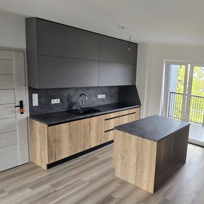
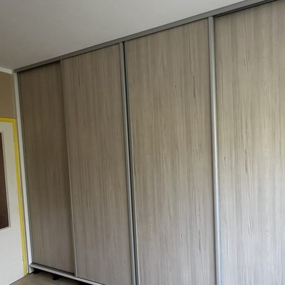
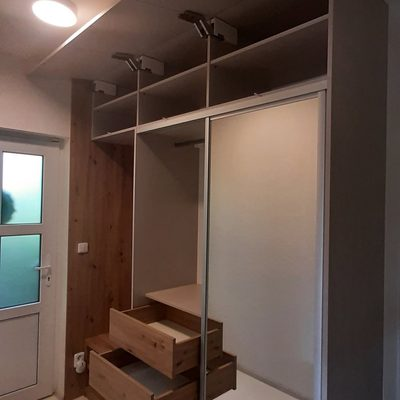
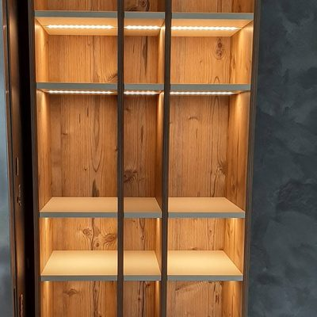
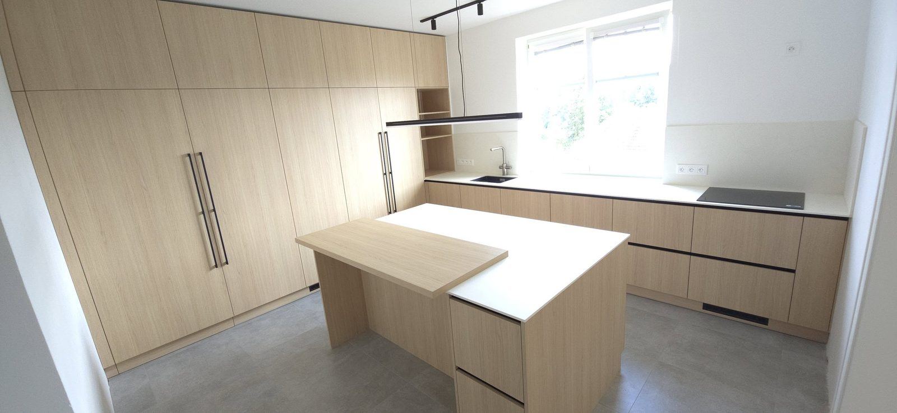
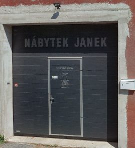

Co vyrábím

Kuchyně
Do domu i do paneláku, s ostrůvkem, policemi a světlem pod skříňkami.

Vestavěné skříně
S posuvnými dveřmi, do ložnice i do chodby.

Předsíně
Skříně až ke stropu, zrcadlo, lavice a police na boty.

Obývací pokoje
TV stěny, police s osvětlením, závěsné stolky.
Dělám i stoly a skříňky do dětských pokojů. Píší o nich Zuzana a Marie níže.
Kuchyň v dekoru Dub Vicenza
Kuchyň do domu, leden 2025. Z čeho je:


Dvířka
Egger H3157 ST12
Dub Vicenza
Pracovní deska a obklad
S63045 CM, 12 mm
kompaktní deska India bílá
- Výsuvy Blum Merivobox, kování Blum
- Baterie Grohe Blue Pure Minta L supersteel s výsuvnou koncovkou
- Dřez Blanco Etagon 500-U černý
Co píší zákazníci
Na Googlu 5,0 z 22 hodnocení.
Milos „Vyráběl nám kompletní zakázku (kuchyně, skříně do chodby a ložnice). Je vidět, že ho jeho práce upřímně baví – pracoval s neuvěřitelnou pečlivostí a precizností.“
Darina „Velmi nás mile překvapilo, že jeho práce nekončí jen u výroby a montáže nábytku. Ochotně nám pomohl i s instalací a zapojením spotřebičů, řešením osvětlení a spoustou dalších detailů, které byly potřeba dotáhnout. Díky tomu jsme nemuseli shánět další řemeslníky a celý projekt proběhl mnohem hladčeji.“
Zuzana „Nechali jsme si vyrobit a nainstalovat stůl na míru pro naše dvě dcery do pokojíčku. Výsledek předčil naše očekávání – zpracování je kvalitní, vše perfektně sedí a montáž proběhla rychle a profesionálně.“
Lenka „Pan Janek je velmi šikovný, precizní, vstřícný a ochotný. S jeho prací jsme nadmíru spokojeni a můžeme ho na 100 % doporučit.“
Marie „Nábytek na míru do dětského pokoje, stoly, skříňky, vše perfektní, od plánu, zaměření, realizace. Vše průběžně konzultováno, pan truhlář má skvělé nápady, vymyslí, poradí přesně na míru dle konkrétního prostoru.“
Pošlete mi rozměry
Napište, co potřebujete, a přidejte rozměry nebo fotku místnosti. Ozvu se Vám a domluvíme se, co dál.
Poslat rozměryRaději telefonem? 724 520 991
E-mail nabytekjanek@seznam.cz
Dílna v Jablonci
Otevřeno Po–Pá 8–17, o víkendu zavřeno.
Otevřeno Po–Pá 8–17, o víkendu zavřeno.
Na Samotě, 466 05 Jablonec nad Nisou 5
